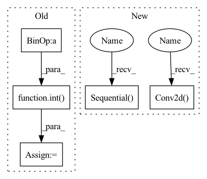

Pattern ID :1344
Before Change
self.period = period
inp = 1
for l in range(4):
out = int( 2 ** (5 + l + 1))
layer += [
nn.utils.weight_norm(nn.Conv2d(inp, out, kernel_size=(5, 1), stride=(3, 1))),
nn.LeakyReLU(0.2)
]
inp = out
self.layer = nn.Sequential(*layer)
self.output = nn.Sequential(
nn.utils.weight_norm(nn.Conv2d(out, 1024, kernel_size=(5, 1))),After Change
nn.utils.weight_norm(nn.Conv2d(64, 128, kernel_size=(5, 1), stride=(3, 1))),
nn.LeakyReLU(0.2, inplace=True),
),
nn.Sequential(
nn.utils.weight_norm(nn.Conv2d(128, 256, kernel_size=(5, 1), stride=(3, 1))),
nn.LeakyReLU(0.2, inplace=True),
) ,
nn.Sequential(
nn.utils.weight_norm(nn.Conv2d(256, 512, kernel_size=(5, 1), stride=(3, 1))),
nn.LeakyReLU(0.2, inplace=True),
),
nn.Sequential(
nn.utils.weight_norm(nn.Conv2d( 512, 1024, kernel_size=(5, 1)) ),
nn.LeakyReLU(0.2, inplace=True),
),
nn.utils.weight_norm(nn.Conv2d(1024, 1, kernel_size=(3, 1))),In pattern: SUPERPATTERN
Frequency: 3
Non-data size: 5
Instances Fragment ID: 3517973
Project Name: coqui-ai/tts
Commit Name: 7b7c5d635fc42be520f86524c6d3c79d7ef48d39
Time: 2021-04-08
Author: rishikksh20@gmail.com
File Name: TTS/vocoder/models/hifigan_mpd_discriminator.py
M Class Name: PeriodDiscriminator
N Class Name: PeriodDiscriminator
M Method Name: __init__(2)
N Method Name: __init__(2)
M Parent Class: nn.Module
N Parent Class: nn.Module
M File Name: TTS/vocoder/models/hifigan_mpd_discriminator.py
N File Name: TTS/vocoder/models/hifigan_mpd_discriminator.py
M Start Line: 9
M End Line: 24
N Start Line: 11
N End Line: 33
Before Change
self.period = period
inp = 1
for l in range(4):
out = int( 2 ** (5 + l + 1))
layer += [
nn.utils.weight_norm(nn.Conv2d(inp, out, kernel_size=(5, 1), stride=(3, 1))),
nn.LeakyReLU(0.2)
]After Change
nn.utils.weight_norm(nn.Conv2d(64, 128, kernel_size=(5, 1), stride=(3, 1))),
nn.LeakyReLU(0.2, inplace=True),
),
nn.Sequential(
nn.utils.weight_norm(nn.Conv2d(128, 256, kernel_size=(5, 1), stride=(3, 1))),
nn.LeakyReLU(0.2, inplace=True),
) ,
nn.Sequential(
nn.utils.weight_norm(nn.Conv2d(256, 512, kernel_size=(5, 1), stride=(3, 1))),
nn.LeakyReLU(0.2, inplace=True),
),
nn.Sequential(
nn.utils.weight_norm(nn.Conv2d( 512, 1024, kernel_size=(5, 1)) ),
nn.LeakyReLU(0.2, inplace=True),
),
nn.utils.weight_norm(nn.Conv2d(1024, 1, kernel_size=(3, 1))), Fragment ID: 3517972
Project Name: coqui-ai/tts
Commit Name: 7b7c5d635fc42be520f86524c6d3c79d7ef48d39
Time: 2021-04-08
Author: rishikksh20@gmail.com
File Name: TTS/vocoder/models/hifigan_mpd_discriminator.py
M Class Name: PeriodDiscriminator
N Class Name: PeriodDiscriminator
M Method Name: __init__(2)
N Method Name: __init__(2)
M Parent Class: nn.Module
N Parent Class: nn.Module
M File Name: TTS/vocoder/models/hifigan_mpd_discriminator.py
N File Name: TTS/vocoder/models/hifigan_mpd_discriminator.py
M Start Line: 9
M End Line: 24
N Start Line: 11
N End Line: 33
Before Change
super(Bottleneck, self).__init__()
if norm_layer is None:
norm_layer = nn.BatchNorm2d
width = int( planes * (base_width / 64.)) * groups
// Both self.conv2 and self.downsample layers downsample the input when stride != 1
self.conv1 = conv1x1(inplanes, width)
self.bn1 = norm_layer(width)
self.conv2 = conv3x3(width, width, stride, groups, dilation)
self.bn2 = norm_layer(width)
self.conv3 = conv1x1(width, planes * self.expansion)
self.bn3 = norm_layer(planes * self.expansion)After Change
D, out_channels, kernel_size=1, stride=1, padding=0, bias=False)
self.bn_expand = nn.BatchNorm2d(out_channels, momentum=0.001)
self.shortcut = nn.Sequential()
if in_channels != out_channels:
self.shortcut.add_module("shortcut_conv",
nn.Conv2d( in_channels, out_channels,
kernel_size=1,
stride=stride,
padding=0,
bias=False) )
self.shortcut.add_module(
"shortcut_bn", nn.BatchNorm2d(out_channels, momentum=0.001))
Fragment ID: 3517937
Project Name: ygzwqzd/lamda-ssl
Commit Name: 360768e49da2ff10157493a976817acc85f1ccd5
Time: 2022-01-17
Author: 1129198222@qq.com
File Name: Semi_sklearn/Network/ResNet.py
M Class Name: Bottleneck
N Class Name: ResNeXtBottleneck
M Method Name: __init__(7)
N Method Name: __init__(9)
M Parent Class: nn.Module
N Parent Class: nn.Module
M File Name: Semi_sklearn/Network/ResNet.py
N File Name: Semi_sklearn/Network/ResNet.py
M Start Line: 76
M End Line: 99
N Start Line: 31
N End Line: 68
Before Change
))
input_channel = output_channel
for t, c, n, s in setting:
output_channel = int( c * width_mult)
for i in range(n):
self.features.append(InvertedResidual(input_channel, output_channel, s, expand_ratio=t))
input_channel = output_channel
self.features.append(conv_1x1_bn(input_channel, last_channel))After Change
def __init__(self, setting, input_channel, output_channel, last_channel, t_free=1, n_class=100):
super(RMobileNet, self).__init__()
self.features = [
nn.Sequential(
nn.Conv2d(3, input_channel, 3, 2 if n_class==1000 else 1, 1, bias=False),
nn.BatchNorm2d(input_channel),
nn.ReLU6(inplace=True)
)
]
self.features.append(
nn.Sequential(
// dw
nn.Conv2d(input_channel, input_channel, 3, stride=1, padding=1, groups=input_channel, bias=False),
nn.BatchNorm2d(input_channel),
nn.ReLU6(inplace=True),
// pw-linear
nn.Conv2d(input_channel, output_channel * t_free, 1, 1, 0, bias=False),
nn.BatchNorm2d(output_channel * t_free),
)
)
input_channel = output_channel
for t, output_channel, n, s in setting:
for i in range(n):
self.features.append(InvertedResidual(input_channel, output_channel, s, expand_ratio=t,free=t_free))
input_channel = output_channel
self.features.append(
nn.Sequential(
nn.Conv2d( input_channel * t_free, last_channel, 1, 1, 0, bias=False) ,
nn.BatchNorm2d(last_channel),
nn.ReLU6(inplace=True)
) Fragment ID: 3517907
Project Name: fxmeng/rmnet
Commit Name: fc5f0bab48cf43723d58ad7e34ac2fe4f4ec82d7
Time: 2022-01-05
Author: 60565778+fxmeng@users.noreply.github.com
File Name: models/rmobilenet.py
M Class Name: RMobileNet
N Class Name: RMobileNet
M Method Name: __init__(7)
N Method Name: __init__(7)
M Parent Class: nn.Module
N Parent Class: nn.Module
M File Name: models/rmobilenet.py
N File Name: models/rmobilenet.py
M Start Line: 136
M End Line: 154
N Start Line: 122
N End Line: 152